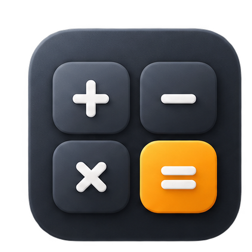
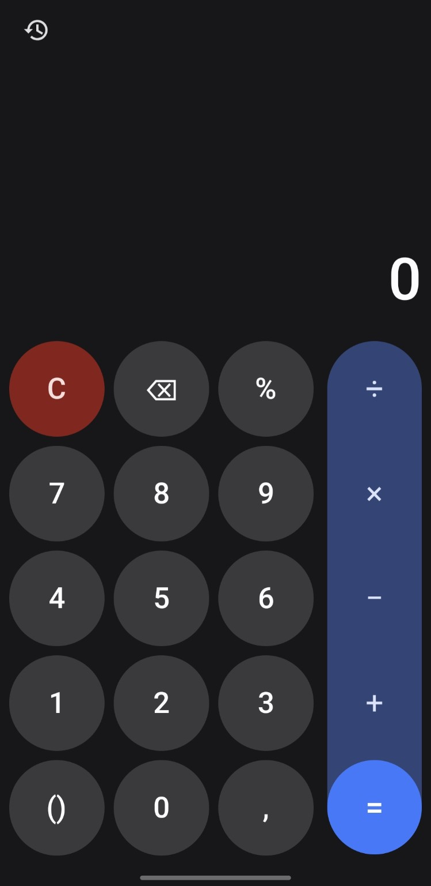
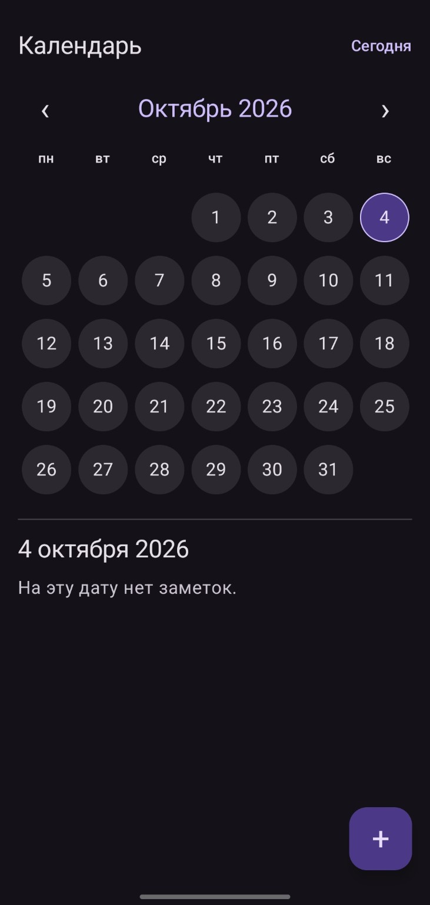

Проблема
Штатный переключатель выключает Bluetooth, но его можно снова включить. Обычное приложение не может запретить это на уровне системы.
Системная блокировка Bluetooth через Android Device Policy. Без root. Без рекламы. С данными, которые остаются на вашем устройстве.

Штатный переключатель выключает Bluetooth, но его можно снова включить. Обычное приложение не может запретить это на уровне системы.
Bluetooth Disable становится Device Policy Controller и применяет DISALLOW_BLUETOOTH. Android запрещает штатное включение и использование Bluetooth, пока защита активна.
Системное ограничение через Android Device Policy.
Быстрый доступ к приложению из шторки Android.
Политика сохраняется после закрытия приложения и перезагрузки.
Cover Mode меняет внешний вид приложения и способ входа. Он не усиливает системную защиту Bluetooth. Все четыре режима реализованы в текущем исходном коде; состав опубликованного APK проверяйте в описании релиза.

Меняет название и значок приложения на «Калькулятор». При запуске открывается рабочий калькулятор с историей вычислений.
Меняет название и значок на «Календарь». Позволяет вести локальные заметки по датам; вход скрыт за секретной датой и текстом.
Меняет название и значок на «Заметки». Можно вести заметки и списки, а основной экран открывать нажатием на секретный фрагмент текста.
Меняет название и значок на «Галерея». Хранит локальные фотографии и альбомы; вход открывается секретной последовательностью нажатий на фото.
Назначение Device Owner обычно выполняется при первоначальной настройке и может потребовать сброса устройства. Перед сбросом сохраните нужные данные. QR и ADB — альтернативные способы назначения; поведение зависит от версии Android и производителя.
Настройка через QR при первом запуске Android. Выполните шаги по порядку.
Настройка с компьютера через USB. Выполните шаги по порядку.
Откройте терминал в папке platform-tools. На Windows используйте cmd; на macOS/Linux добавьте эту папку в PATH, чтобы команды adb были доступны.
adb devicesadb shell dpm set-device-owner com.pulse.bluetoothdisable/.admin.AppDeviceAdminReceiver В Windows PowerShell вместо adb используйте .\adb; в macOS/Linux без PATH — ./adb.
Если устройство не найдено, проверьте USB-кабель, разрешение отладки и драйвер производителя на Windows. Если Android отклоняет назначение, проверьте аккаунты, рабочие профили и другого владельца устройства.
Исходники доступны на GitHub для проверки.
Без рекламных SDK и встроенных объявлений.
Заметки, фотографии и настройки остаются локально.
Данные исключены из Android backup и переноса.
Device Owner применяется для защиты Bluetooth и связанных разрешений приложения.
Калькулятор, календарь, заметки и галерея Cover Mode.



Он даёт приложению право применять системную Bluetooth policy. Без этого обычное приложение не может запретить повторное включение Bluetooth.
Разрешение на управление адаптером и системное ограничение — разные механизмы. DISALLOW_BLUETOOTH применяется через Device Policy, а не обычный запрос разрешения.
Нет. Не нужны также Shizuku, Magisk или Accessibility Service.
Да, активное системное ограничение сохраняется после закрытия приложения и перезагрузки. После настройки проверьте его на своём устройстве.
Приложение, назначенное Device Owner, нельзя удалить обычным способом, пока оно остаётся владельцем. Для удаления нужно снять управление предусмотренным Android способом; в некоторых сценариях потребуется сброс устройства.
Меняет значок, название, стартовый интерфейс и способ входа в основной экран. Он не усиливает Bluetooth policy.
Во внутреннем хранилище приложения на устройстве. Облачной синхронизации нет, пользовательские данные исключены из backup.
Нет. В Android-приложении нет аналитики, телеметрии и разрешения INTERNET. Сайт запрашивает сведения о релизе у GitHub API.
QR передаёт Setup Wizard сведения для загрузки APK и назначения Device Owner. Он используется при первоначальной настройке; это не код входа в приложение.
QR запускает настройку через Android Setup Wizard. ADB назначает владельца командой с компьютера после установки APK, если устройство соответствует условиям Android.
Четыре режима реализованы в текущем исходном коде. Последний опубликованный APK может отставать от main: смотрите описание выбранного релиза.
Для полной блокировки настройте Device Owner.
Смена значка и названия, обновлённая плитка и защита при переносе данных.
Подробнее о релизеСветлая и тёмная темы, русский и английский интерфейс.
Подробнее о релизеСообщить об ошибке или предложить улучшение.